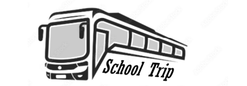

School Trip
PROJET EN COURS
Description
Ce projet était le plus gros de notre première année. Nous étions une équipe de 5 pour faire une application codée en dur qui organise des événements. Nous avons choisi de faire une application sur l'organisation des voyages scolaires pour faciliter leur préparation. Pour cela, notre idée était de faire une application simple, rapide et intuitive pour rendre l'organisation de voyage plus agréable. Si l'application a les résultats attendus, cela permettra d'avoir plus d'organisation de voyage pour les élèves.
Notre projet a été fait en plusieurs étapes et livrables.
Étape de cadrage
Dans cette étape, nous avons commencé à chercher, approfondir notre idée de projet et à le cadrer. Nous avons décrit les objectifs et analysé les contraintes, les risques, les impactes et les expressions du besoin.
Étape des mathématiques numériques
Dans cette étape, le travail consistait à utiliser des mathématiques numériques pour résoudre un problème de notre projet. Ce problème devait être une fonction à deux variables en rapport avec notre organisation de voyages scolaires. Dans notre cas, nous avons choisi de se demander quel est le pourcentage d'organisateur pouvant accepter notre offre selon un prix et une qualité. Nous avons modélisé cette fonction 3D sur RStudio. Notre conclusion fut explicite, plus la qualité est élevée et le prix faible, plus l'organisateur sera favorable d'accepter.
Étape de Graphes
Dans cette étape, nos professeurs nous ont demandé d'utiliser les graphes sur un problème tout autre. Nous avions à faire un graphe de l'organisation des étapes de cuisine d'une Tarte Tatin.
Étape de la documentation de la Modélisation
Dans cette étape, nous avons dû réfléchir sur la conception et le développement d’une plateforme d'hébergement d’événements. Nous avons écrit les cas d'utilisation grâce à des diagrammes et des scénarii d'usage. Nous avons fait les priorisations de nos cas d'utilisation et des architectures sur notre application grace à des diagrammes de classe métier.
Étape de la documentation de l'interface Homme-Machine
Dans cette étape, nous avons écrit des personas avec leur scénario d'usage. Puis, nous avons fait du maquettage et nous les avons décrit selon des critères ergonomiques.
Étape de développement
Après avoir fini tout nos documents, nous sommes passés au développement de l'application.
Le projet étant en cours, la programmation n'a pas encore été réalisée.
Organisation
Au début du projet, nous avons décidé de me désigner cheffe de Projet. J'ai mis en place des outils tels que Google Doc et un groupe de discussion de travail.
- Pour le dossier Cadrage, je me suis occupée de répartir le travail, d'organiser les parties, et de mettre en forme le pdf. J'ai fait les parties 'Contraintes', 'Risques' et 'Impacts'.
- Pour le dossier des mathématiques numériques, je me suis occupé de tous les calculs et de la modélisation sur RStudio pendant qu'une de mes collègues rédigeait les explications.
- Pour le dossier Graphes, je me suis occupé de la mise en forme du pdf et de la justification.
- Pour le dossier de la modélisation, je me suis occupé en binôme de toutes les informations par rapport au cas d'utilisation.
- Pour le dossier de l'interface Homme-Machine, je me suis occupé du maquettage et de la mise en forme pdf.
- Enfin pour l'étape de la programmation, A VOIR
Le projet étant en cours, la programmation n'a pas encore été réalisée.
Compétences acquises
J'ai appris à résoudre une fonction à deux variables avec une matrice hessienne et à modéliser cette fonction. J'ai approfondi mon analyse des risques et des contraintes, ma conception de maquettes. J'ai assimilé beaucoup de compétences sur l'organisation et sur l'explication des cas d'utilisation.
Le projet étant en cours, la programmation n'a pas encore été réalisée.
Accès au projet
Conclusion
Ce projet d'organisation de voyages scolaires était très intéressant et diversifié. J'ai pu faire de nombreuses choses dans un temps imparti.
Le projet étant en cours, la programmation n'a pas encore été réalisée.